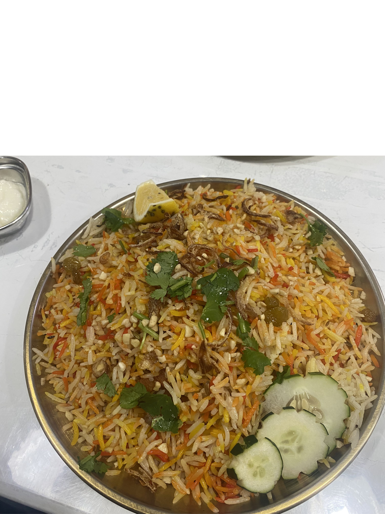
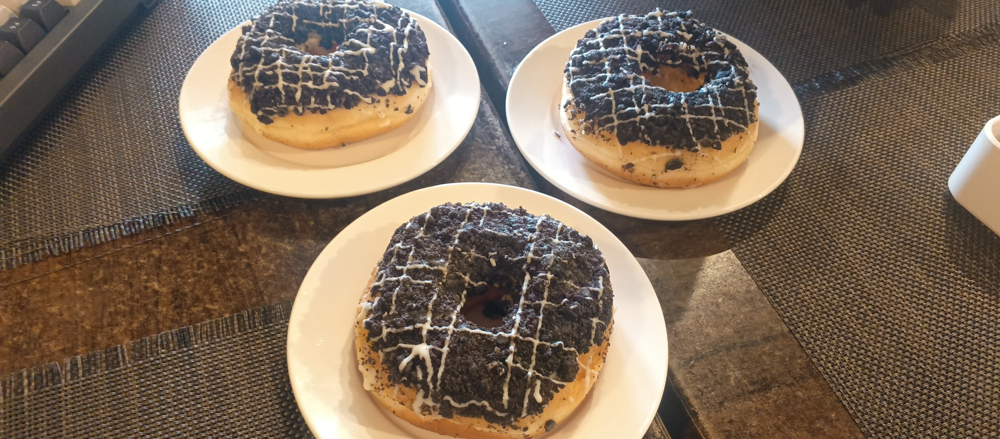

Spice Haven Biryani
One of the richest flavors in town. A true Pandi classic.
Honest reviews, top picks, and must-try dishes near you.
Explore ReviewsStart your taste adventure with these local favorites

One of the richest flavors in town. A true Pandi classic.

Big bite, big flavor. Always sulit!

Soft, rich, irresistible. Perfect with coffee.